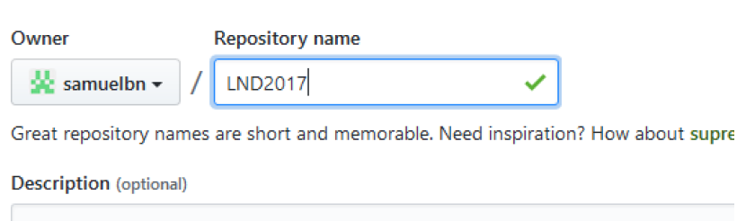
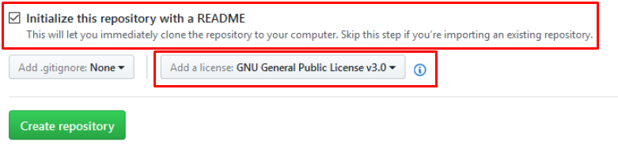
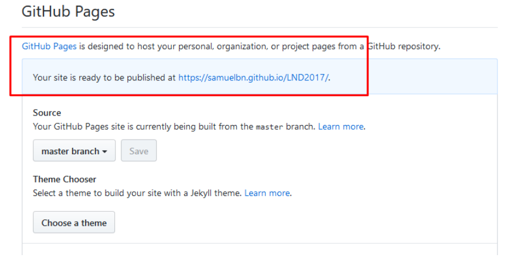
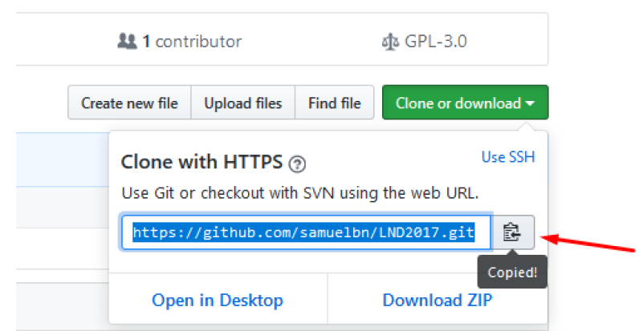
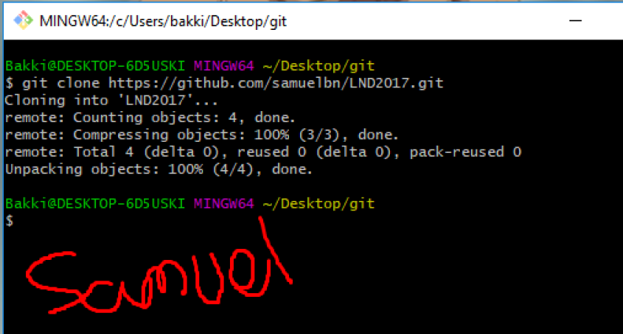
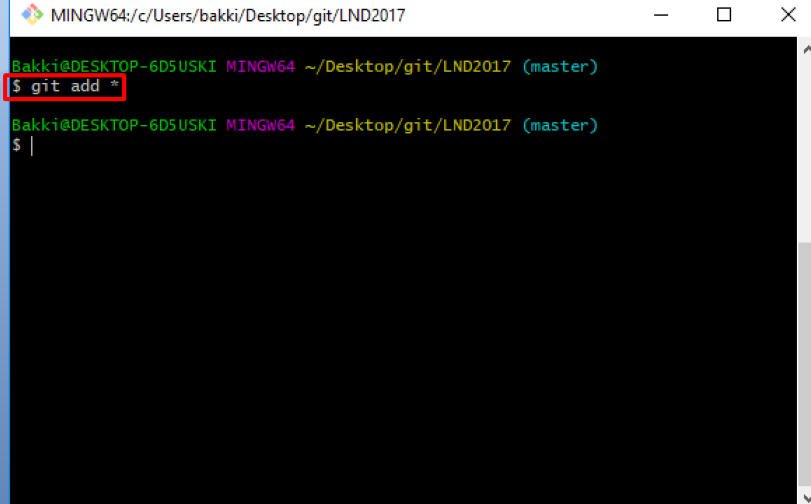
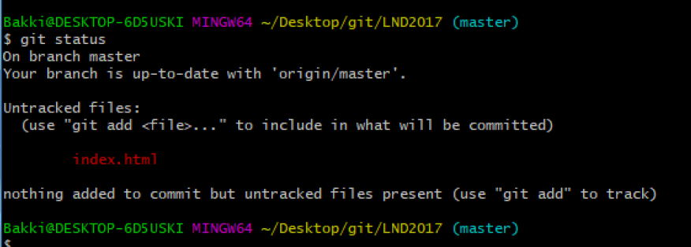
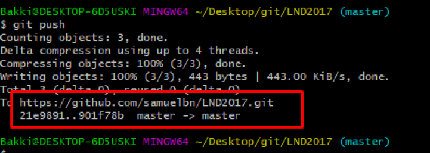
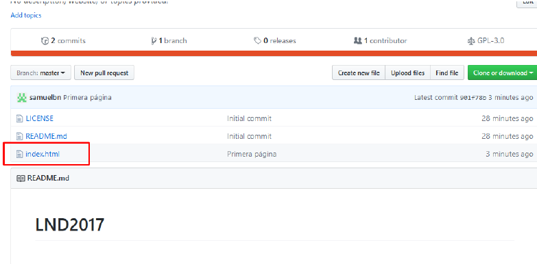
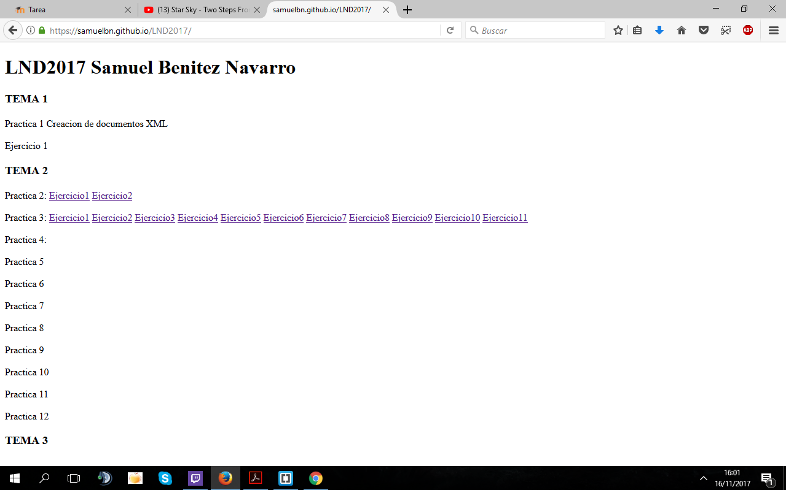

1- Crea una cuenta en Github. Aquí almacenarás tu código.
2- Crea un repositorio que se llame LND2017, con fichero README y licencia GNU.
 3- Crea una página web asociada a este repositorio. Esta página es pública y está vinculada al repositorio.
4- Clona el repositorio en tu disco local. Si estás usando Windows tienes que instalar git para Windows.
 5- Añade cualquier fichero del directorio a git (git add *)
6- Crea un fichero html en dicho directorio y comprueba el estado (git status)
7- Realiza un commit (git commit -m "Primera página")

8- Realiza un push para que los cambios sean públicos (git push).
9 Comprueba en la web asociada al repositorio que puedes acceder al fichero.
10 Modifica la página y súbela al servidor GitHub repitiendo los pasos anteriores.
